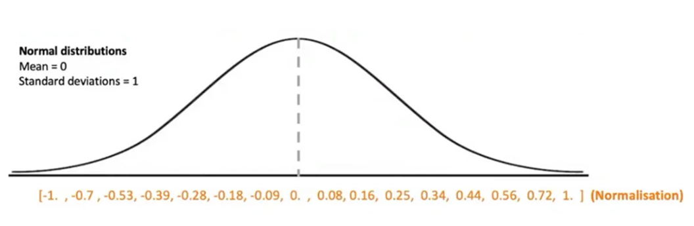
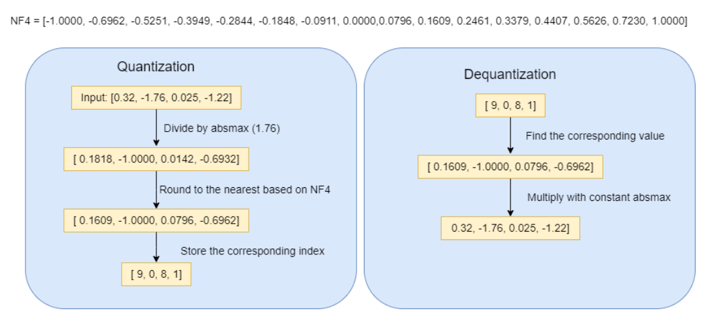
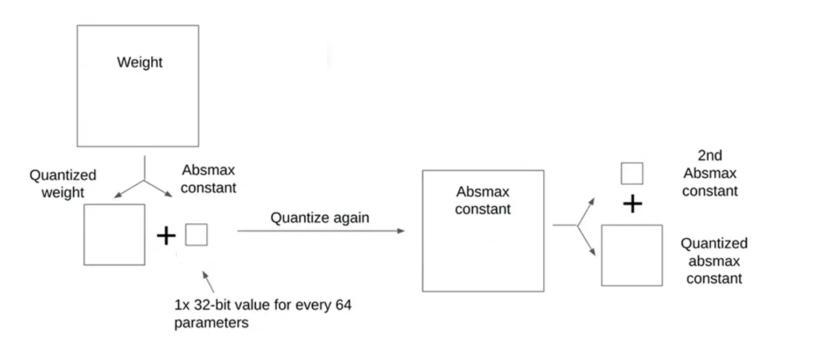

4.2 案例：量化前后模型对比¶
bitsandbytes是一个专为深度学习模型量化优化设计的轻量级CUDA函数库，主要用于降低大型语言模型（LLM）的内存占用和计算成本，支持8位和4位量化技术。
接下来，使用这个工具包完成模型量化。
1.安装方法¶
bitsandbytes 量化对硬件和软件环境有特定要求，如果环境配置不正确，会导致量化失败或无法使用GPU加速。
1.1 硬件要求¶
NVIDIA GPU 12GB 或更高 不支持AMD GPU
- 4-bit量化：至少 6 GB 可用显存（用于7B模型）
- 8-bit量化：至少 10 GB 可用显存（用于7B模型）
1.2 软件版本¶
Python版本 ：Python 3.8 - 3.11
PyTorch版本 ：PyTorch 2.0+
CUDA工具包版本：CUDA 11.8 或 12.1
注意：PyTorch必须与CUDA版本匹配
1.3 安装方法¶
pip install bitsandbytes transformers accelerate
2. 模型量化¶
为对比量化前后模型显存的占用情况，定义以下方法进行显存统计：
import torch
from transformers import AutoModelForCausalLM, AutoTokenizer, BitsAndBytesConfig
import gc
def clear_gpu_memory():
"""清理GPU内存"""
gc.collect()
torch.cuda.empty_cache()
def print_gpu_usage(description):
"""打印当前GPU使用情况"""
if torch.cuda.is_available():
allocated = torch.cuda.memory_allocated() / 1024 ** 3 # 转换为GB
reserved = torch.cuda.memory_reserved() / 1024 ** 3 # 转换为GB
print(f"{description}:")
print(f" 已分配显存: {allocated:.2f} GB")
print(f" 已保留显存: {reserved:.2f} GB")
print("-" * 50)
else:
print("CUDA不可用")
clear_gpu_memory() 函数 ：清理GPU内存中的缓存和未使用的变量
- 调用
gc.collect()：强制进行垃圾回收，清理Python中不再使用的对象 - 调用
torch.cuda.empty_cache()：清空PyTorch的CUDA缓存，释放被保留但未使用的显存
print_gpu_usage(description) 函数 ：打印当前GPU内存使用情况的详细信息
- 已分配显存：PyTorch张量实际占用的显存大小
- 已保留显存：PyTorch为后续使用预留的显存大小
2.1未量化模型¶
处理流程如下所示：
- 初始化准备 :清理GPU显存并记录初始显存状态
- 加载模型 ：从本地路径加载Qwen2-7B模型并使用FP16精度
- 执行推理 ：构建用户对话消息，生成100个token的回复
- 显存分析 ：对比加载前后的显存变化以及计算模型参数占用的显存大小
- 清理资源 ：删除模型和中间变量并释放GPU显存
"""测试FP16模型的显存使用"""
print("=== 测试 FP16 模型 ===")
clear_gpu_memory()
print_gpu_usage("初始状态")
# 记录加载前的显存
start_allocated = torch.cuda.memory_allocated() / 1024 ** 3
model = AutoModelForCausalLM.from_pretrained(
"/gemini/pretrain/Qwen2-7b-instruct",
torch_dtype=torch.float16,
device_map="auto",
trust_remote_code=True
)
tokenizer = AutoTokenizer.from_pretrained("/gemini/pretrain/Qwen2-7b-instruct", trust_remote_code=True)
print_gpu_usage("模型加载后")
# 记录推理前的显存
pre_inference_memory = torch.cuda.memory_allocated() / 1024 ** 3
# 进行推理测试
messages = [{"role": "user", "content": "你好，请介绍一下你自己。"}]
text = tokenizer.apply_chat_template(messages, tokenize=False, add_generation_prompt=True)
inputs = tokenizer(text, return_tensors="pt").to(model.device)
with torch.no_grad():
outputs = model.generate(
**inputs,
max_new_tokens=100,
do_sample=True
)
print_gpu_usage("推理过程中")
# 计算模型本身占用的显存（近似值）
model_memory = pre_inference_memory - start_allocated
print(f"模型参数大致占用: {model_memory:.2f} GB")
del model, tokenizer, inputs, outputs
clear_gpu_memory()
输出结果：
初始状态:
已分配显存: 0.00 GB
已保留显存: 0.00 GB
--------------------------------------------------
Loading checkpoint shards: 100%|████████████████████████████████████████████████████████████████████████████████████| 4/4 [06:47<00:00, 102.00s/it]
Special tokens have been added in the vocabulary, make sure the associated word embeddings are fine-tuned or trained.
模型加载后:
已分配显存: 14.67 GB
已保留显存: 14.88 GB
--------------------------------------------------
推理过程中:
已分配显存: 14.67 GB
已保留显存: 14.93 GB
--------------------------------------------------
模型参数大致占用: 14.67 GB
其中：
- "已分配显存"：当前实际在使用的显存
- "已保留显存"：PyTorch为未来分配预留的显存
- 模型参数量 ≈ (加载后显存 - 加载前显存)
2.2 8Bit量化¶
8-bit 量化使用**向量化量化**方案，将FP16权重动态量化为INT8，在计算前反量化回FP16进行计算。
# 8-bit 量化配置
quantization_config_8bit = BitsAndBytesConfig(
load_in_8bit=True, # 启用8-bit量化
llm_int8_enable_fp32_cpu_offload=True, # 允许CPU卸载
llm_int8_threshold=6.0, # 异常值阈值，如果 |激活值| > 阈值 × 标准差，则标记为异常值
)
代码实现为：
- 初始化准备 :清理GPU显存并记录初始显存状态
- 配置量化参数 ：启用8-bit量化，并设置阈值
- 加载模型 ：从本地路径加载Qwen2-7B模型并应用8bit量化配置
- 执行推理 ：构建用户对话消息，生成100个token的回复
- 显存分析 ：对比加载前后的显存变化以及计算模型参数占用的显存大小
- 清理资源 ：删除模型和中间变量并释放GPU显存
print("\n=== 测试 8-bit 量化模型 ===")
clear_gpu_memory()
print_gpu_usage("初始状态")
# 记录加载前的显存
start_allocated = torch.cuda.memory_allocated() / 1024 ** 3
quantization_config= BitsAndBytesConfig(
load_in_8bit=True, # 启用8-bit量化
llm_int8_enable_fp32_cpu_offload=True, # 允许CPU卸载
llm_int8_threshold=6.0, # 异常值阈值
)
model = AutoModelForCausalLM.from_pretrained(
"/gemini/pretrain/Qwen2-7b-instruct",
quantization_config=quantization_config,
device_map="auto",
trust_remote_code=True
)
tokenizer = AutoTokenizer.from_pretrained("/gemini/pretrain/Qwen2-7b-instruct", trust_remote_code=True)
print_gpu_usage("模型加载后")
# 记录推理前的显存
pre_inference_memory = torch.cuda.memory_allocated() / 1024 ** 3
# 进行推理测试
messages = [{"role": "user", "content": "你好，请介绍一下你自己。"}]
text = tokenizer.apply_chat_template(messages, tokenize=False, add_generation_prompt=True)
inputs = tokenizer(text, return_tensors="pt").to(model.device)
with torch.no_grad():
outputs = model.generate(
**inputs,
max_new_tokens=100,
do_sample=True
)
print_gpu_usage("推理过程中")
# 计算模型本身占用的显存（近似值）
model_memory = pre_inference_memory - start_allocated
print(f"模型参数大致占用: {model_memory:.2f} GB")
del model, tokenizer, inputs, outputs
clear_gpu_memory()
输出结果：
初始状态:
已分配显存: 0.00 GB
已保留显存: 0.00 GB
--------------------------------------------------
Loading checkpoint shards: 100%|█████████████████████████████████████████████████████████████████████████████████████| 4/4 [03:02<00:00, 45.72s/it]
Special tokens have been added in the vocabulary, make sure the associated word embeddings are fine-tuned or trained.
模型加载后:
已分配显存: 8.55 GB
已保留显存: 8.78 GB
--------------------------------------------------
推理过程中:
已分配显存: 8.58 GB
已保留显存: 8.97 GB
--------------------------------------------------
模型参数大致占用: 8.55 GB
2.3 4bit量化¶
4-bit 量化是 bitsandbytes 的核心优势，使用两种主要的4-bit数据类型：
| 特性 | NF4 (NormalFloat4) | FP4 (FloatPoint4) |
|---|---|---|
| 设计原理 | 针对神经网络权重分布优化 | 标准的4-bit浮点数 |
| 数值分布 | 非均匀分布，匹配权重统计特性 | 均匀分布 |
| 精度保持 | ✅ 更好 | ⚠️ 一般 |
| 推荐度 | ✅ 首选 | ⚠️ 备选 |
2.3.1 NF4量化¶
4-bit NormalFloat (NF4) 的数据类型，它是一种量化方法，用于在减少数据表示的位数的同时，尽量保留数据的分布特性。对于神经网路，一般参数值都是符合正态分布的（0附近的参数很多，远离0的参数很少），使用上面的均匀分布是不太合适的。

NF4将正态分布，按照其累计概率密度，分为16个区域，因为4bit 量化后的的整数有16个，可以看到，越靠近0就越密集，越远离0就越稀疏。对于每个区间，可以求出起始点和终止点对应的X值。

输入向量是X=[0.32, -1.76, 0.025, -1.22]，我们首先找到absmax(X)=1.76，然后X/absmax(X)归一化成[0.1818, -1, 0.0142, -0.6932]。然后根据NF4=[-1.0000, -0.6962, -0.5251, -0.3949, -0.2844, -0.1848, -0.0911, 0.0796, 0.1609, 0.2461, 0.3379, 0.4407, 0.5626, 0.7230, 1.0000]进行舍入。
2.3.2 双重量化¶
双重量化是量化量化常数以进一步减少内存以保存这些常数的过程。

双量量化将第一次量化的常数 作为第二次量化的输入，进行第二级的量化，进一步减小所需的空间
2.3.3 量化实践¶
4bit量化配置：
quantization_config = BitsAndBytesConfig(
load_in_4bit=True,
bnb_4bit_use_double_quant=True, # 启用嵌套量化
bnb_4bit_quant_type="nf4", # 使用优化后的NF4
bnb_4bit_compute_dtype=torch.bfloat16 # 反量化类型
)
代码实现为：
- 初始化准备 :清理GPU显存并记录初始显存状态
- 配置量化参数 ：启用4-bit量化，并设置类型
- 加载模型 ：从本地路径加载Qwen2-7B模型并应用4bit量化配置
- 执行推理 ：构建用户对话消息，生成100个token的回复
- 显存分析 ：对比加载前后的显存变化以及计算模型参数占用的显存大小
- 清理资源 ：删除模型和中间变量并释放GPU显存
print("\n=== 测试 4-bit 量化模型 ===")
clear_gpu_memory()
print_gpu_usage("初始状态")
# 记录加载前的显存
start_allocated = torch.cuda.memory_allocated() / 1024 ** 3
quantization_config = BitsAndBytesConfig(
load_in_4bit=True,
bnb_4bit_use_double_quant=True,
bnb_4bit_quant_type="nf4",
bnb_4bit_compute_dtype=torch.bfloat16
)
model = AutoModelForCausalLM.from_pretrained(
"/gemini/pretrain/Qwen2-7b-instruct",
quantization_config=quantization_config,
device_map="auto",
trust_remote_code=True
)
tokenizer = AutoTokenizer.from_pretrained("/gemini/pretrain/Qwen2-7b-instruct", trust_remote_code=True)
print_gpu_usage("模型加载后")
# 记录推理前的显存
pre_inference_memory = torch.cuda.memory_allocated() / 1024 ** 3
# 进行推理测试
messages = [{"role": "user", "content": "你好，请介绍一下你自己。"}]
text = tokenizer.apply_chat_template(messages, tokenize=False, add_generation_prompt=True)
inputs = tokenizer(text, return_tensors="pt").to(model.device)
with torch.no_grad():
outputs = model.generate(
**inputs,
max_new_tokens=100,
do_sample=True
)
print_gpu_usage("推理过程中")
# 计算模型本身占用的显存（近似值）
model_memory = pre_inference_memory - start_allocated
print(f"模型参数大致占用: {model_memory:.2f} GB")
del model, tokenizer, inputs, outputs
clear_gpu_memory()
输出结果：
初始状态:
已分配显存: 0.00 GB
已保留显存: 0.00 GB
--------------------------------------------------
Loading checkpoint shards: 100%|█████████████████████████████████████████████████████████████████████████████████████| 4/4 [03:21<00:00, 50.36s/it]
Special tokens have been added in the vocabulary, make sure the associated word embeddings are fine-tuned or trained.
模型加载后:
已分配显存: 5.65 GB
已保留显存: 5.81 GB
--------------------------------------------------
推理过程中:
已分配显存: 5.66 GB
已保留显存: 6.13 GB
--------------------------------------------------
模型参数大致占用: 5.65 GB
2.4 量化前后对比¶
对比上述结果：
| 配置类型 | 模型加载时间 | 模型参数占用 | 推理时显存 |
|---|---|---|---|
| 未量化模型 | 102.00s/it | 14.67 GB | 14.93 GB |
| 8bit量化 | 45.72s/it | 8.55 GB | 8.97 GB |
| 4bit量化 | 50.36s/it | 5.65 GB | 6.13 GB |
1.显存占用大幅降低
模型参数显存：
- 8-bit量化：14.67GB → 8.55GB (节省41.7%)
- 4-bit量化：14.67GB → 5.65GB (节省61.5%)
推理峰值显存：
- 8-bit量化：14.93GB → 8.97GB (节省39.9%)
- 4-bit量化：14.93GB → 6.13GB (节省58.9%)
2.模型加载速度显著提升
- 8-bit量化：102.00s → 45.72s (提速55.2%)
- 4-bit量化：102.00s → 50.36s (提速50.6%)
3.硬件门槛大幅降低
- 8-bit量化：使12GB显存GPU可流畅运行7B模型
- 4-bit量化：使8GB显存GPU可运行7B模型
- 消费级显卡：RTX 3060/4060等显卡即可运行大模型
怎么选择量化方法？
8-bit 量化精度损失极小，推理速度快，推理速度快，具有轻微显存优化，适用于对精度要求高的场景
4-bit 显存节省显著，精度有损失，适用个人开发者、学生等 资源受限环境。
简单规则：
- 要省显存 → 选4-bit
- 要高质量 → 选8-bit
- 不确定 → 先试4-bit，不够再换8-bit
对于大多数个人用户和资源受限的场景，4-bit量化是更实用的选择，它提供了最佳的性价比。
3.总结¶
bitsandbytes量化技术通过在保持模型性能的同时大幅降低资源需求，使得大模型能够在消费级硬件上运行。
1.量化方法
- 8-bit量化：INT8向量化量化，异常值分离处理
- 4-bit量化：NF4优化数据类型 + 双重量化
2.量化效果
- 硬件门槛降低：8GB显存即可运行7B模型
- 加载速度提升：最高提速55%
- 资源效率优化：支持消费级显卡（RTX 3060/4060）